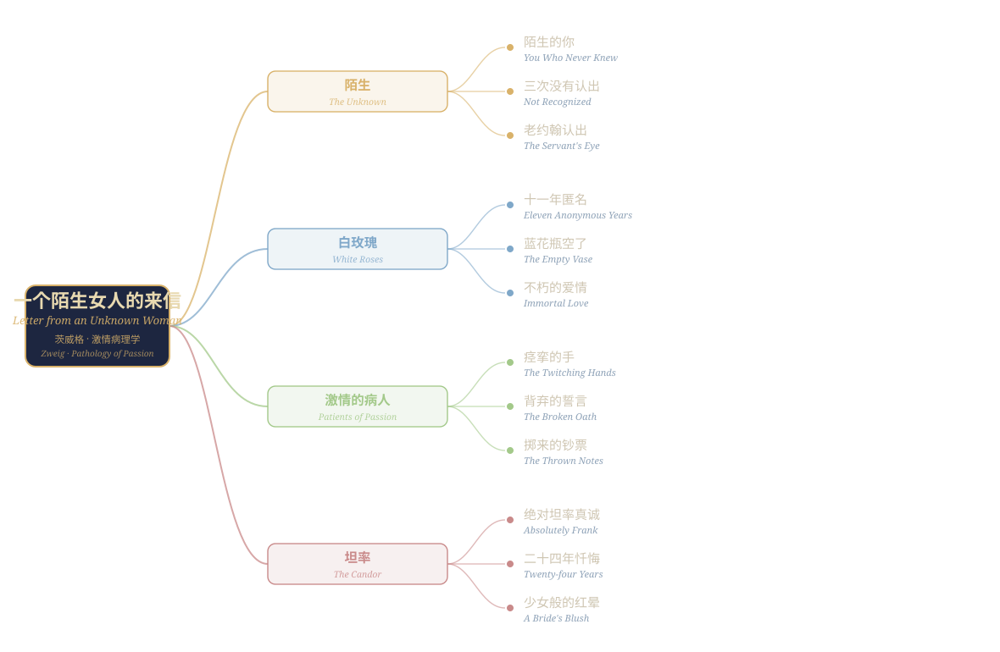

一个陌生女人的来信
〇 · 书籍信息
基本信息
| 书名 | 《一个陌生女人的来信》——人民文学出版社「蜂鸟文丛」茨威格作品集，收录《一个陌生女人的来信》（1922）与《一个女人一生中的二十四小时》（1927）两篇代表作 |
|---|---|
| 作者 | 斯蒂芬·茨威格（1881–1942），维也纳人——以中篇小说和传记名世，「对心理学与弗洛伊德学说非常感兴趣」；1942 年 2 月 22 日与妻子在巴西服毒自尽 |
| 译者 | 张玉书——北京大学教授、茨威格研究权威，译笔精准而克制，把茨威格的「激情病理学」原样搬进中文 |
| 体裁 | 书信体心理中篇（《来信》）· 第一人称忏悔叙事（《二十四小时》）——两篇共用同一个母题：激情的病人 |
| 一句话 | 「你，从来也没有认识过我的你啊！」——一封写给不认识写信人的男人的信，是暗恋的史诗，也是认知的悖论 |
一 · 核心主题总览
两篇代表作之下，是四组互相咬合的母题：① 陌生的悖论（认知的颠倒）
全书的标题就是它的机关：最亲密者最盲目，最疏远者最明亮——作家一辈子没有认出她，老仆人约翰一眼认出。「他在这一秒钟里对你的了解比你一辈子对我的了解还多」——茨威格的认知论：身份会挡住眼睛，爱不会。
② 单恋的史诗（把一生塞进一封信）
十三岁初遇、五年沉默、三次夜晚、一个夭折的孩子、年年一束白玫瑰——她把二十年的暗恋压缩成一封临终的信：「我要你的一生都想着我」的欲望，最终以「你感觉到死亡，感觉到不朽的爱情」的模糊战栗收尾——不给顿悟，只给余温。
③ 激情即疾病（赌徒的手）
《二十四小时》的赌徒，茨威格全程不写他的脸，只写他那双「痉挛的手」——C 太太用亡夫传下的手相术「永远不去看脸，只看人的双手」：激情在茨威格笔下是一种传染病，症状写在手上。
④ 坦率的代价（忏悔与红晕）
C 太太的开场白是「我答应过您，绝对坦率真诚」——她讲了二十四小时的全部，包括被当众扔钞票的羞辱；讲完之后，「她的两颊泛起一阵红晕，直升到她的白发」：茨威格的结尾从不裁决，只留一个少女般的红晕——坦率本身是尊严，不是耻辱。
二 · 第一段 一封迟到二十年的信—— 陌生的你 · 十三岁 · 一见钟情 ——
第一句：陌生的你
信的第一行就是全书的机关：「你，从来也没有认识过我的你啊！」第二行是死亡通知：「我的儿子昨天死了」——称谓即主题，开头即倒叙：茨威格用一个收信人不认识的称呼，宣布了这封信的全部悲剧结构——它注定是一封单向的信，发信人已经把生命的最后一刻用来写它。
◆ 语言学习 · 德语关键词 · 书信
| Brief / 信 | 书信体小说的容器——收信人永远沉默：单向叙事的全部压力由写信人承担 |
|---|---|
| 陌生的（fremd） | 标题的核心词——她在他生命里陌生了二十年：陌生不是距离，是不被看见 |
十三岁初遇
作家搬进维也纳同一栋楼，十三岁的少女一见倾心：「从这一秒钟起，我就爱上了你。」紧接着她自己拆穿这句话的陈腐——「我知道，女人们经常向你这个娇纵惯了的人说这句话。可是请相信我，没有一个女人像我这样死心塌地、舍身忘己地爱过你。」茨威格写初恋的仪式感：偷看门缝、亲吻门把手、在雪地里等他——暗恋的全部仪式，都源于对方的一无所知。
◆ 语言学习 · 叙事 · 仪式
| 这一秒钟 | 爱情的时间刻度——茨威格的爱总以「秒」计量：一秒即终身 |
|---|---|
| 门把手 | 暗恋的圣物——她吻过他碰过的每一件东西：物体替她保管爱 |
五年与重逢
母亲改嫁，她随迁他乡，五年忍痛离开；成年后回到维也纳重逢，三度共度良宵——而他把她当作新的艳遇。第三夜后他远行，归来后她已生下孩子。重逢之夜的全书泪点在她出门前的最后一眼：「可是你的眼睛微笑着，亲切然而一无所知。你又吻了我一下。可是你没有认出我来。」——三次亲密，三次陌生：茨威格把「认不出」写成最残忍的重复。
◆ 语言学习 · 心理 · 重复
| 没有认出 | 全书的重复句——三次夜晚三次落空：认出是爱情里最贵的奢侈品 |
|---|---|
| 一无所知 | 他的眼神档案——「亲切然而一无所知」：温柔与盲目共用一副眼睛 |
三 · 第二段 暗恋的代价—— 产院 · 白玫瑰 · 钞票 ——
孩子与产院
生下他的孩子，是她「抓住他」的唯一方式；为抚养孩子她甘愿委身富人，在贫民产院受尽屈辱——「在那里，一个人的羞耻心被人们的目光钉在十字架上，备受他们的毒言恶语的鞭笞」。她写产院的一整段是全书最黑的部分：茨威格让单恋的代价具体到病床、消毒水和被翻动的被单——浪漫被折算成生存的账单。
◆ 语言学习 · 社会 · 代价
| 产 院 | 贫穷女人的审判庭——她在那里「忍受着和娼妓之类的病人朝夕相处之苦」 |
|---|---|
| 抓 住 | 孩子的功能论——「我要你的一生都想着我」：孩子是她对遗忘的唯一反击 |
白玫瑰
每年他的生日，「总要给你送去一束白玫瑰，和你在我们恩爱的第一夜之后送给我的那些花一模一样」——十一年间他从未问过一次是谁送的花。白玫瑰是全书最安静的道具：一场持续十一年的匿名通信，收件人从没读过正文；她自己却把这束花当作每年一次的重逢——暗恋的全部宗教仪式感，都在这一束花里。
◆ 语言学习 · 意象 · 花
| 白玫瑰 | 爱的暗号——同一个颜色重复十一年：仪式是对遗忘的反抗原 |
|---|---|
| 蓝花瓶 | 水晶花瓶的容器叙事——她童年偷看房间时就记住了它：花瓶空了，故事就完了 |
付钞票
最后一次重逢，他把她当成烟花女子，眼色付款——「我看到你非常谨慎地把几张大钞票塞进我的暖手筒。我在这一瞬间怎么会没有叫出声来，没有扇你一个嘴巴呢！——我从小就爱你，并且是你儿子的母亲，可你却为了这一夜付钱给我……」她接受了钞票——为了不揭穿自己唯一的尊严；这一段是茨威格心理描写的巅峰：受辱者最大的体面，是把侮辱当作秘密保管。
◆ 语言学习 · 伦理 · 侮辱
| 暖手筒 | 钞票的藏身处——侮辱被悄悄塞进御寒的织物里：冷与暖的反讽 |
|---|---|
| 不揭穿 | 她的最后策略——尊严不是争来的，是不解释：单恋者的终局姿态 |
四 · 第三段 认出的悖论—— 老约翰 · 空花瓶 · 不朽的爱情 ——
老约翰
出门时她在前屋撞见老仆人约翰——这位从她童年起就没见过她的老人，一眼认出了她：「他在这一秒钟里对我的了解比你一辈子对你的了解还多。」她把那几张「鞭笞我的钞票」匆忙塞在约翰手里——认知的悖论在此完成闭环：仆人认出了童年时代的小女孩，主人却认不出爱了他二十年的女人。
◆ 语言学习 · 结构 · 对照
| 约翰 | 认知的对照组——最疏远的眼睛最明亮：身份会挡住眼睛，爱不会 |
|---|---|
| 鞭笞我的钞票 | 侮辱的转赠——她把伤害递给唯一认出她的人：一个动作完成全部清算 |
蓝花瓶空了
作家读完这封长信，眼前浮起「隐约的怀念」般的印象——茨威格只给了一句：「他感觉到死亡，感觉到不朽的爱情。」不给顿悟，只给战栗：蓝花瓶从此空了，但作家永远不会知道送花的人是谁——标题的「陌生」二字直到最后一行仍然成立；这是茨威格最狠的一笔：他让读者彻底知道，让当事人永远不知道。
◆ 语言学习 · 结局 · 留白
| 不朽的爱情 | 作家的错觉命名——他把一生一次的暗恋读成了文学意象：又一次没有认出 |
|---|---|
| 空了 | 花瓶的终态——不再有下一束花：故事的真正句号 |
茨威格的激情病理学
茨威格「对心理学与弗洛伊德学说非常感兴趣」，作品擅长「对奇特命运下个人遭遇和心灵的热情描摹」——陌生女人的爱是永不点亮的灯：它照亮谁？只照亮她自己。《来信》与《二十四小时》并读：一个是把激情藏了一生的病人，一个是把激情放出来一天的病人——茨威格从不审判病人，只解剖病症。
◆ 语言学习 · 概念 · 病理学
| 激情（Leidenschaft） | 茨威格的通用病灶——德语词根本义是「受苦」：激情即受苦的词源学 |
|---|---|
| 弗洛伊德 | 同时代的维也纳——潜意识、压抑与偏执：茨威格的手术刀来自隔壁诊室 |
五 · 第四段 二十四小时—— 餐桌争论 · 痉挛的手 · 坦率 ——
开局：餐桌争论
里维埃拉的旅馆餐桌上，昂里哀特太太与人私奔引爆争论；「我」热情洋溢地宣称「二十四小时完全可能决定一个女人的命运」——一直沉默的英国 C 太太第二天找到他，讲出自己四十二岁那年蒙特卡洛的二十四小时。小说是《来信》的镜像：写信人自述，听信人记录——茨威格让「倾听」成为叙事的入口：你愿意听多久，别人就敢讲多深。
◆ 语言学习 · 叙事 · 框架
| 昂里哀特太太 | 引信人物——她的私奔案启动了全书的争论：别人的丑闻是我的开口 |
|---|---|
| 二十四小时 | 时间的极端单位——一天足够拆掉四十二年的体面 |
手相术与赌徒的手
C 太太看赌的方法来自亡夫：「永远不去看脸，只看桌子这个四方形，而在这四方形里，也只看人的双手。」她看见一双「痉挛着，抽搐着」的手——输光的人。茨威格全程不写赌徒的脸，只写手：激情的病灶长在手上——抽搐、痉挛、把钞票抓来摊开；只看手的观察法，是文学史上最著名的激情诊断术。
◆ 语言学习 · 描写 · 手
| 手相术 | 亡夫的遗产——「一种阐释手相的学问」：观察方法的来源即观察者的来路 |
|---|---|
| 痉挛的手 | 激情的体征——脸可以伪装，手不会：茨威格的人物学在指尖 |
背誓与收场
赌徒在教堂发誓后次日背誓重回赌台，当众把钱扔向她：「您别烦我！」管台子的喝道「夫人，请安静！」——她错失送行、被掷钞受辱；十年后听闻他在蒙特卡洛开枪自杀。讲完这一切，C 太太说「我现在轻松多了」，起身告辞——「她的两颊泛起一阵红晕，直升到她的白发」「往事的回忆使她像新娘一样慌乱」——「我」低下头，「恭恭敬敬地吻了吻她那枯萎得像秋叶似的微微颤抖的手」：全书的终场是一个吻，落在手上。
◆ 语言学习 · 结局 · 红晕
| 绝对坦率真诚 | C 太太的开场承诺——讲全部，包括羞辱：坦率本身是尊严 |
|---|---|
| 红 晕 | 六十七岁脸上的激情余温——「不知这是往日激情的反射，还是心情慌乱的结果」 |
六 · 人物图鉴与成长弧线—— 主角配角 · 一张表看穿 ——
主要人物
陌生女人——写信人——从十三岁暗恋到临终告白：把一生塞进一封信的病人
作家（R）——收信人——三次夜晚没有认出她，读完信只觉得「不朽的爱情」：最亲密的盲人
C 太太——六十七岁的英国寡妇——四十二岁蒙特卡洛的二十四小时：激情的另一位病人
次要人物（功能位）
| 老约翰 | 仆人——一眼认出她的对照组：最疏远的眼睛最明亮 |
|---|---|
| 孩子 | 夭折的儿子——她「抓住他」的唯一方式：写信的直接原因 |
| 赌徒 | 二十四小时的病人——痉挛的手与背弃的誓言 |
| 昂里哀特太太 | 引信人物——餐桌上的私奔案启动了全部叙事 |
七 · 主题与象征—— 每个道具都在说话 ——
| 白玫瑰 | 十一年的匿名信——收件人从没读过正文 |
|---|---|
| 蓝花瓶 | 故事的容器——花瓶空了，故事就完了 |
| 暖手筒 | 侮辱的藏身处——冷与暖的反讽 |
| 门把手 | 暗恋的圣物——物体替她保管爱 |
| 赌徒的手 | 激情的体征——脸可以伪装，手不会 |
| 红 晕 | 六十七岁的余温——坦率本身是尊严 |
八 · 写作手法赏析—— 怎么写，就能怎么学 ——
① 单向书信体
收信人永远沉默——全部叙事压力由写信人承担：书信体的极限用法。
② 重复句的残忍
「你没有认出我来」重复三次——认出是爱情里最贵的奢侈品：重复即悲剧。
③ 只写手不写脸
赌徒全程无面孔——激情的病灶长在手上：茨威格的人物学在指尖。
④ 框架镜像
《来信》写信人自述，《二十四小时》听信人记录——两篇互为镜像：倾诉与倾听的配对。
九 · 名段欣赏—— 原文精读 · 逐段赏析 ——
十 · 金句摘录—— 12 条 · 中英对照 · 带出处 ——
"你，从来也没有认识过我的你啊！"—— 《来信》开篇
"我的儿子昨天死了"—— 《来信》
"从这一秒钟起，我就爱上了你。"—— 《来信》 · 初遇
"没有一个女人像我这样死心塌地、舍身忘己地爱过你"—— 《来信》
"可是你的眼睛微笑着，亲切然而一无所知。你又吻了我一下。可是你没有认出我来。"—— 《来信》 · 重逢
"每逢你的生日，总要给你送去一束白玫瑰"—— 《来信》
"我看到你非常谨慎地把几张大钞票塞进我的暖手筒"—— 《来信》 · 付钞票
"他在这一秒钟里对我的了解比你一辈子对我的了解还多。"—— 《来信》 · 老约翰
"他感觉到死亡，感觉到不朽的爱情"—— 《来信》 · 结尾
"二十四小时完全可能决定一个女人的命运"—— 《二十四小时》
"我答应过您，绝对坦率真诚。"—— 《二十四小时》 · C 太太
"恭恭敬敬地吻了吻她那枯萎得像秋叶似的微微颤抖的手"—— 《二十四小时》 · 结尾
十一 · 拓展阅读—— 原文 · 词条 · 译文 ——
原文与文本
- Stefan Zweig — Wikipedia —— 生平、流亡写作与 1942 年巴西的结局
- Letter from an Unknown Woman — Wikipedia —— 1922 年原作与电影改编史（1948/2004）
主题与延伸
- Twenty-Four Hours in the Life of a Woman — Wikipedia —— 1927 年姊妹篇——激情病理学的另一半
- Sigmund Freud — Wikipedia —— 茨威格的手术刀来源——同时代维也纳的潜意识研究
十二 · 个人感悟与心得—— 三点心得 ——
白玫瑰 · 赌徒的手 · 红晕
① 身份会挡住眼睛
仆人一眼认出她，主人二十年认不出——认知的悖论不在视力，在身份。你对身边人的了解，可能少于一个恰好路过的陌生人：亲密不是了解的保证，是了解的屏障。
② 把侮辱当作秘密保管
她收下钞票不揭穿——尊严不是争来的，是不解释。被误解时最贵的反应是沉默：解释给不懂的人，等于把伤口展览两遍。
③ 坦率本身是尊严
C 太太讲完全部包括羞辱，换来的是红晕而非审判——敢于完整讲述自己的人，已经赢了故事：倾听者的吻落在手上，就是给坦率发的勋章。
—— 茨威格死于 1942 年 2 月 22 日，巴西彼得罗波利斯，与妻子服毒自尽。他在遗书里说：「我向我所有的朋友致意！愿他们在漫长的黑夜之后还能看到黎明。」
十三 · 一页速查（复习用）
| 全书骨架 | 镜像双篇：《来信》（写信人自述）＋《二十四小时》（听信人记录） |
|---|---|
| 核心命题 | 陌生的悖论；单恋的史诗；激情即疾病；坦率的代价 |
| 必读篇目 | 来信（全文）→ 二十四小时（全文）——两篇都是中篇，一个下午可读 |
| 三大符号 | 白玫瑰（仪式）· 赌徒的手（病灶）· 红晕（尊严） |
| 一句话总结 | 茨威格一生都在写激情的病人——他从不审判病人，只解剖病症 |
十四 · 全书思维导图—— 一图纵览 ——

一图纵览全书骨架 · 中英双语对照 · 手机端可左右滑动查看全图